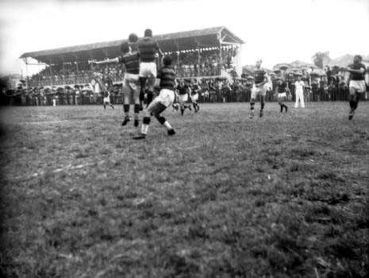

Primeira exibição de futebol em BH
No dia 3 de maio de 1904 a bola rolou pela primeira vez em Belo Horizonte. Victor Serpa organizou uma exibição no Parque Municipal.
Mais Maio/1904Fundação do Sport Club
Victor Serpa funda o Sport Club, primeiro time de futebol de Belo Horizonte, em 10 de julho de 1904.

Mais Julho/1904
Campo do Viserpa Foot-ball Club
Um dos primeiros fora do Parque Municipal. Ficava entre as ruas Paraíba e Pernambuco, próximo à Avenida do Contorno.
Mais 1905Fundação do Athletico Mineiro Football Club
Em 25 de março de 1908, é fundado o Athletico Mineiro Football Club, atual Clube Atlético Mineiro.
Mais Março/1908
Primeiros jogos no Prado Mineiro
O hipódromo do Prado Mineiro recebe as primeiras partidas de futebol.
Mais 1909Taça Bueno Brandão
O Prado Mineiro sedia a Taça Bueno Brandão, precursora do Campeonato Mineiro e vencida pelo Athletico.

Mais 1914
Fundação do Palestra Itália
No dia 2 de janeiro de 1921, o Palestra Itália, atual Cruzeiro Esporte Clube, é fundado.
Mais Janeiro/1921
Inauguração do estádio do América
No dia 6 de maio de 1923 o América estreia seu estádio, o primeiro de Belo Horizonte.

Mais Maio/1923
Inauguração do Estádio do Barro Preto
Palestra e Flamengo fazem a partida de inauguração do estádio, em 1º de julho. Jogo terminou empatado em 3 a 3.
Mais Julho/1923
América é decacampeão
O América finaliza a polêmica série de dez títulos do Campeonato da Cidade.
Mais 1925Palestra é campeão em seu estádio
No Barro Preto, Palestra se sagra campeão do Campeonato da Cidade alternativo de 1926, após a vitória de 10 a 1 sobre o Grêmio.
Mais Fevereiro/1927Atlhetico 9 x 2 Palestra Itália
No estádio do América, acontece a maior goleada da história do duelo Atlético x Cruzeiro.
Mais Novembro/1927
Inauguração do Estádio Alameda
Em 9 de setembro de 1928, América e Athletico fazem a primeira partida do estádio Alameda.

Mais Setembro/1928
Inauguração do Estádio Antônio Carlos
O confronto contra o Corinthians terminou em vitória athleticana por 4 a 2, no dia 30 de maio.

Mais Maio/1929
Athletico é campeão da Taça Internacional de BH
A partida contra o Vitória de Setúbal foi a primeira internacional de uma equipe mineira.
Mais Setembro/1929Inauguração do Mercado Central
Construído no local do antigo estádio do América, o Mercado é inaugurado no dia 7 de setembro.
Mais Setembro/1929
Inauguração da iluminação do Antônio Carlos
Em partida que contou com a presença de Jules Rimet, presidente da FIFA, o Athletico inaugura a iluminação do seu estádio.

Mais Setembro/1930
Athletico é campeão do Campeonato da Cidade
Comandado pelo "Trio Maldito", o Athletico conquista seu primeiro título na nova casa.

Mais 1931
Athletico é campeão dos Campeões
Foi considerado o primeiro título a nivel nacional de um time mineiro.
Mais Fevereiro/1937
Reinauguração do Estádio do Barro Preto
Campo do Barro Preto passa por reformas e é reinaugurado como Estádio Juscelino Kubitschek de Oliveira. Cruzeiro e Botafogo fizeram a partida de inauguração, que terminou empatada em 1 a 1.
Mais Julho/1945
Estádio Alameda é reinaugurado
Prefeito Otacílio Negrão de Lima reinaugura o estádio com o chute inicial.
Mais Maio/1948
Final do Campeonato Mineiro de 1948
O jogo que não terminou: decisão sobre o título foi da Justiça Desportiva.

Mais Maio/1948
Inauguração do Estádio Raimundo Sampaio
Popularmente conhecido como Independência, o estádio é inagurado no dia 25 de junho.
Mais Junho/1950
Atlético é campeão do Campeonato da Cidade
Último título atleticano jogando apenas no seu estádio.
Mais 1950Última partida do Cruzeiro no Estádio JK
Equipe profissional do Cruzeiro faz sua última partida no estádio. Clube vence o amistoso contra o Democrata de Sete Lagoas por 4 a 0, no dia 14 de fevereiro.
Mais Fevereiro/1965Inauguração do Estádio Governador Magalhães Pinto
O Mineirão é inaugurado no dia 5 de setembro.

Mais Setembro/1965
Venda controversa do Alameda
Estádio Otacílio Negrão de Lima é vendido para o Grupo Pão de Açúcar, na presidência de Ruy da Costa Val.
Mais 1973JK é derrubado para a construção do parque esportivo
Campo foi desativado e teve seu terreno transformado na sede e no clube social.
Mais 1985
Inauguração do shopping Diamond Mall
Construído no local do antigo estádio Antônio Carlos, o shopping Diamond Mall é inagurado no dia 1º de novembro.
Mais Novembro/1996